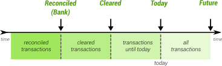

HomeBank User manual
Lexicon
This section is intended to give you a brief introduction to the basic concepts and terminology you will need to understand in order to make sense to the rest of the documentation.
Wallet
Wallet is the 1st level of data. It represent a HomeBank file (.xhb)
Managing the few wallet properties is done in the Properties dialog.
↑ Back to Top
Account
Account is the 2nd level of the data. An account is a division of the wallet, that will contains your financial transactions.
Managing the accounts is done in the Accounts dialog.
↑ Back to Top
Account type
Account type is a simple classification for account, only to group account display into the main windows 'Your accounts' area.
As so there is no specific behavior beneath them.
Most of those type comes from QIF and OFX specification, the usage definition from various sources.
Bank
Used as a general account held by a bank or any financial institution.
Cash
Used to track the spending of cash you withdraw from a bank account (or credit card,
in the case of a cash advance). Whenever you take cash out of an account (e.g. an ATM
withdrawal), transfer the money to your newly created cash account. Then, whenever
you spend the cash on something, create a withdrawal in the cash account for the appropriate amount.
Asset
Used to track the value of property you own or money that is owed to you. For example,
if you own a vehicle, an asset account can help you track appreciation and depreciation
on that property. When using an asset account, record the base value of the asset as a
deposit into the account, then enter gains or earnings as positive transactions and losses
as negative transactions.
Credit card
Used to track charges and payments made against a credit account. Charges made to the account should be entered
as negative transactions; payments should be positive (either deposits or transfers from
other accounts). The balance of a credit card account should almost always be negative or zero - a positive balance would indicate a credit on the account due to over-payment.
Liability
Used to track debt or money owed for which you do not make regular payments. When
using a liability account, record the initial amount owed as a withdrawal from the account,
then enter any payments made against the debt as deposits or transfers into the
account.
Checking
Used to track deposits and withdrawals from a typical bank checking account.
Savings
Used to track deposits and withdrawals from a typical bank savings account.
↑ Back to Top
Transaction
Transaction is the last level of data. A transaction is a financial transaction, attached to its own account.
In addition to the usual fields you can find in most accounting application, HomeBank offers the following:
- tags: like in the web, you can assign some tags to a transaction
- payment: small image showing the payment mode
- info: miscellaneous data for payment, like date, cheque number and so on
- remind state: to keep track of debt
- vehicle-cost data: memo field can contain data for your vehicle refuels
Managing transactions is done in the main window or the account window.
↑ Back to Top
Type of transaction
Expense
An expense is an amount with a negative sign, also called a debit.
Income
An income is an amount with a positive sign, also called a credit.
Transfer
A transfer (more precisely internal transfer) is a money movement between 2 of your accounts, in one or several Financial institution, as so, like you emit and receive the money there is no payee.
This is a special transfer for HomeBank, as it will link the source and destination transaction for further changes of most data to be synced.
In exception of the Status and Date (and Amount the opposite sign), all the fields will be synced, whatever you make some changes from src or dst account.
The reason is that the money may arrive on the dst account a few days later, and when you reconcile you will do account separately.
Since v5.7 there is a preference to sync also the status by default.
When you change the type of a transaction to this one, HomeBank may propose some potential target transaction for you to select within this dialog.
 transfer have some usage limitation:
transfer have some usage limitation:
- split by category is not allowed
- import with CSV is not possible
- use with multiple selection edition is not possible
↑ Back to Top
Inline calculation
When input amount in transaction or split dialog, you can do some basic inline calculations. There is no usual priority of operand +-*/ here, the calculation is done from left to right.
For example, if you input '3+2*6', result will be 30 (3+2=5, 5*6=30), and not 15 like it would be in a calculator.
↑ Back to Top
Status of transaction
Cleared
a transaction is cleared when the bank has recorded it,
those transaction are not taken into account in the bank balance.
Reconciled
a transaction is checked when you have controlled it with your bank statement,
those transaction are part of the bank balance.
Remind
Remind is a special status for the transaction. Its usage is described here.
The purpose is to keep the transaction into the list for later uses to remind you about a bill to pay, a bill to be paid for, or money you lent or wait refund on.
Remind transaction are excluded from any computing: balance, reports, etc. except if you change some preference.
Void
Void is a special status to set transaction to be ignored everywhere.
The visibility can be controlled from preference or filter.
↑ Back to Top
Flags of transaction
There is now 6 color flags you can assign to transaction, colors are Red, Orange, Yellow, Green, Blue and Purple. The assign can only be done from the ledger window using the context menu or some shortcuts CTRL+x. There is also a new quick filter to easily filter on flags.
Flags can be used for several purpose: action reminder, money lent to friend, etc.
↑ Back to Top
Financial institution
A financial institution can be a bank or a credit card company or any other institution.
<no institution> will be displayed when the item has no institution set.
↑ Back to Top
Forecast (cashflow)
A forecast of cash flow is available for some report. It is based on the scheduled transaction. In the graph it will display with future style, so with a shaded color and dashed lines. The forecast will only display when there is a date junction within the date range you selected: if we are in July and you select first quarter (which end on march) it will not display. If you select this month, this year, it will.
↑ Back to Top
Life Energy
Life energy is a measurement of your expense by hours of work, based on your estimate earning by hour. This is an alternative and interesting way to consider your spending.
After you have filled your estimate 'earn by hour' into Properties dialog, you will be able to toggle on/off an additional (..h..m) beside the Expense into the ledger window, there is a toggle toolbar button on the top.
↑ Back to Top
Currency
A currency is a money that is used in a particular country at a particular time, or it can be a cryptocurrency as well, or even something that do not exists at all.
↑ Back to Top
Payment Mode
This field is a dual field for payment and works together with the number field.
(none)
When payment do not applied or is unknown.
credit card
A credit card is a payment card issued to users (cardholders) as a method of payment. It allows the card-holder to pay for goods and services based on the holder's promise to pay for them. The issuer of the card (usually a bank) creates a revolving account and grants a line of credit to the card-holder, from which the card-holder can borrow money for payment to a merchant or as a cash advance.
check
A check (or cheque in English) is a document that orders a bank to pay a specific amount of money from a person's account to the person in whose name the cheque has been issued.
cash
Cash refers to money in the physical form of currency, such as banknotes and coins.
bank transfer
A bank transfer is a method of electronic funds transfer from one person or entity to another. It can be made from one bank account from or to a bank account you don't own.
debit card
A debit card (also known as a bank card or check card) is a plastic payment card that provides the card-holder electronic access to their bank account(s) at a financial institution. Some cards may bear a stored value with which a payment is made, while most relay a message to the card-holder's bank to withdraw funds from a payer's designated bank account.
standing order
A standing order (or a standing instruction) is an instruction a bank account holder ("the payer") gives to his or her bank to pay a set amount at regular intervals to another ("the payee's") account. The instruction is sometimes known as a banker's order.
electronic payment
Electronic payment is a feature of on-line, mobile and telephone banking, similar in its effect to a giro, allowing a customer of a financial institution to transfer money from their transaction or credit card account to a creditor or vendor such as a public utility, department store or an individual to be credited against a specific account.
deposit
A deposit is money placed with some other entity. It is a credit for the party who placed it, and it may be taken back (withdrawn), transferred to some other party, or used for a purchase. It is often used with respect to banks, where deposits are usually their main source of funding.
financial institution fee
Bank fees are assessed to customers for various services and as penalties. There are unauthorized overdraft fees, ATM usage fees, and fees for having an account balance under a required amount.
direct debit
A direct debit or direct withdrawal is a financial transaction in which one person withdraws funds from another person's bank account. Formally, the person who directly draws the funds ("the payee") instructs his or her bank to collect (i.e., debit) an amount directly from another ("the payer's") bank account designated by the payer and pay those funds into a bank account designated by the payee.
 Mobile Phone
Mobile Phone
A mobile phone payment can be done in many ways, pay apps, nfc, etc.
↑ Back to Top
Number
Initially designed for cheque number, but can keep real or value date, card id, txn id, number, person, etc.
this field is automatically filled for cheque numbers, when you select payment = cheque.
This is not a memo, not an additional memo field, and it is not designed for such usage.
↑ Back to Top
Split
Split is the ability to cut out the amount of a transaction to multiple categories.
Managing split is done in the Split dialog from the Transaction dialog.
↑ Back to Top
Scheduled
Scheduled is a transaction you can configure to be automatically inserted.
Typical such transactions are the one's occurring very often, for example: Wage, Rent, Phone, Taxes, etc...
Managing scheduled is done in the Scheduled/Template dialog.
Please have a look at Using the Scheduled transaction feature for more details.
↑ Back to Top
Template
Template will enable to fast add manually some transactions without too much seizure, most of the fields already populated with correct data
Managing templates is done in the Scheduled/Template dialog.
Templates can also be created from existing transactions from the Account window.
Every template is available as a bookmark for fill purpose in the Transaction dialog.
↑ Back to Top
Payee
A payee can optionally be set for each transaction to later perform sorting, filtering and analysis. The payee identify people you give money to, as like as those you receive money from.
Managing payees is done on the Payee dialog. Payees are global to the wallet and are shared between all the accounts.
For each payee, you can define a default payment mode and category, those 2 fields will be used to populate related field on 2 occasion:
- into the transaction/scheduled/template dialog: if you choose a payee, the payment mode and the category will be filled if none/empty
- at the end of the import, if you check 1) Enrich with payee default, with same restriction value must be none/empty
<no payee> will be displayed when the item has no payee set.
↑ Back to Top
Pending
Transaction may be set to a pending status. This status is an outflow status, so that transaction "ghostly" exists, until you Approve/Reject them.
This status can occurs in 2 situation:
- you choose to explicitly import some transaction into that status
- you create a transaction with a date prior to the last reconciled date of its account, or prior 90 days before today.
Any account with transactions into this status will have:
- 'My accounts' list: show a warning icon
- ledger: a quick filter 'Unapproved'
- ledger: a warning bar on top
- ledger: a popmenu (right click) to Approve or Reject them
↑ Back to Top
Category
A category can optionally set for each transaction to later perform sorting, filtering and analysis. The categories are another classification model of your financial transactions.
Managing categories is done on the Categories dialog. Categories are global to the wallet and are shared between all the accounts.
Please also note well that categories and subcategories are the same from a HomeBank point of view, the subcategories are only to create a hierarchy in category tree. This is especially important for the budget dialog
<no category> will be displayed when the item has no category set.
↑ Back to Top
Tag
Some tags can optionally be set for each transaction to later perform sorting, and analysis. The tags are most common to those yo can find in the web, so it is words separated by space. Which mean for composed word you must use a dash to separate the words within the tags like my-card.
↑ Back to Top
Assignment
Assignments are some rule to fast set payee and/or category to the transactions
Please refer to the Using the Automatic assignment feature for details on how using this feature.
↑ Back to Top
Budget
The budget is aimed towards reporting comparing actual values to predefined budget values allocated to each expense/income category. The budget report shows the difference (decay) between the budget and the actual expense/income for each categories. You can select which accounts are included in the budget report.
Using the Budget feature provides a quick overview to get you started. For more in-depth details see the Budget dialog and the Budget report.
The budget is global to the wallet, so if you need to manage a different budget each year, you can use CSV import/export capabilities.
↑ Back to Top
Backup
There is 2 mechanism that ensure you can get back to a several previous version of your .xhb file.
1) the last backup file
Every-time you save your file, the previous version will be saved with .xhb~ (tilde at the end), into the wallet folder.
To get back to this file, you can use the File > Revert menu. If there is no .xhb~ file, this menu will be disabled.
2) the backup file once a day
Each day you save your file for the first time, a .bak file will be created into the backup folder. Which means if you save it 3 times during the same day, only the first save will be saved as the day backup.
To get back to one of this backup, you can use the File > Restore backup menu. If there is no .bak file, this menu will be disabled.
With this mechanism, you have a good compromise between safety backup and data storage.
↑ Back to Top
Balances
A key point of your accounts are balances. HomeBank offers 4 balances covering the entire life cycle of your accounts. You can show/hide the balances you need for your usage, for example hide the reconciled and future for a simple management.

Reconciled : includes reconciled transaction, so this should be the same balance as the last reconciled statement you checked
Cleared : includes reconciled + cleared transaction
Today : balance of transactions until today, ignoring the state
Future : balance of all the transaction : include all transaction currently into the account
n.b.: remind transaction are never taken into consideration into balances, except if you have forced to
↑ Back to Top